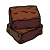

Brownie com recheio de Nutella
 Ingredientes
- 4 ovos (200g)
- 1 e 1/2 xícara (chá) de açúcar (275g)
- 150g de manteiga
- 2 xícaras (chá) de farinha de trigo
- 1 e 1/2 xícara (chá) de Nescau (achocolatado)
- 1 xícara (chá) de cacau em pó (50/70%)
- Nutella para o recheio
Modo de Preparo
- Em uma tigela, bata muito bem os ovos e o açúcar até ficar bem claro e espumoso (isso é essencial para formar a casquinha do brownie).
- Derreta a manteiga e adicione na mistura, mexendo bem.
- Acrescente a farinha e misture até a massa ficar homogênea.
- Adicione o Nescau e misture bem.
- Peneire o cacau em pó e incorpore à massa.
- Com o forno pré-aquecido a 180°C, despeje metade da massa em uma forma untada com manteiga e Nescau.
- Asse até que a superfície fique mais firme (não pode estar mais líquida).
- Retire do forno, espalhe a Nutella (ou outro recheio) e cubra com o restante da massa.
- Leve novamente ao forno até que, ao espetar um palito, ele saia com algumas migalhas úmidas, mas não molhado.
- Espere esfriar para cortar e servir. Assim, os pedaços ficam mais bonitos e estruturados.
Sobre Recheios
- Você pode variar o recheio conforme sua preferência: doce de leite, brigadeiro, creme de amendoim ou até mesmo pedaços de chocolate branco. Seja criativo!
- A consistência do recheio, quando não sólido, é importante, pois um recheio que esteja muito mole pode dificultar a hora de colocá-lo sobre a massa ainda não assada completamente